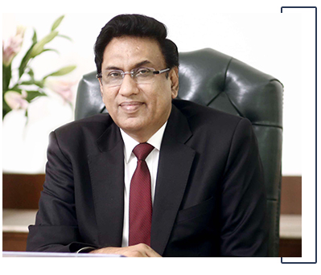

CHAIRMAN
SHRI G.S. MATHAROO
Shri G.S. Matharoo, Chairman,Queen's caramal School, Ashok Vihar, Dwarka 16B and Dwarka 22, has been instrumental in galvanizing the field of Secondary Education in the country through his dynamic and visionary leadership. The success of the mission to realize the transformation of secondary education was not inevitable. It required creation of a new paradigm.
Shri G.S. Matharoo, a former Civil Servant, joined the Education Sector 10 years back carrying a passion for creating a new paradigm in secondary education. He realized that education should not impose upon everybody to develop the same kind of skills/knowledge, but rather to enhance and develop each person's strength and passio
Ashok Vihar, Dwarka 16B and Dwarka 22, has been instrumental in galvanizing the field of Secondary Education in the country through his dynamic and visionary leadership. The success of the mission to realize the transformation of secondary education was not inevitable. It required creation of a new paradigm.
Shri G.S. Matharoo, a former Civil Servant, joined the Education Sector 10 years back carrying a passion for creating a new paradigm in secondary education. He realized that education should not impose upon everybody to develop the same kind of skills/knowledge, but rather to enhance and develop each person's strength and passioAshok Vihar, Dwarka 16B and Dwarka 22, has been instrumental in galvanizing the field of Secondary Education in the country through his dynamic and visionary leadership. The success of the mission to realize the transformation of secondary education was not inevitable. It required creation of a new paradigm.
Shri G.S. Matharoo, a former Civil Servant, joined the Education Sector 10 years back carrying a passion for creating a new paradigm in secondary education. He realized that education should not impose upon everybody to develop the same kind of skills/knowledge, but rather to enhance and develop each person's strength and passio[